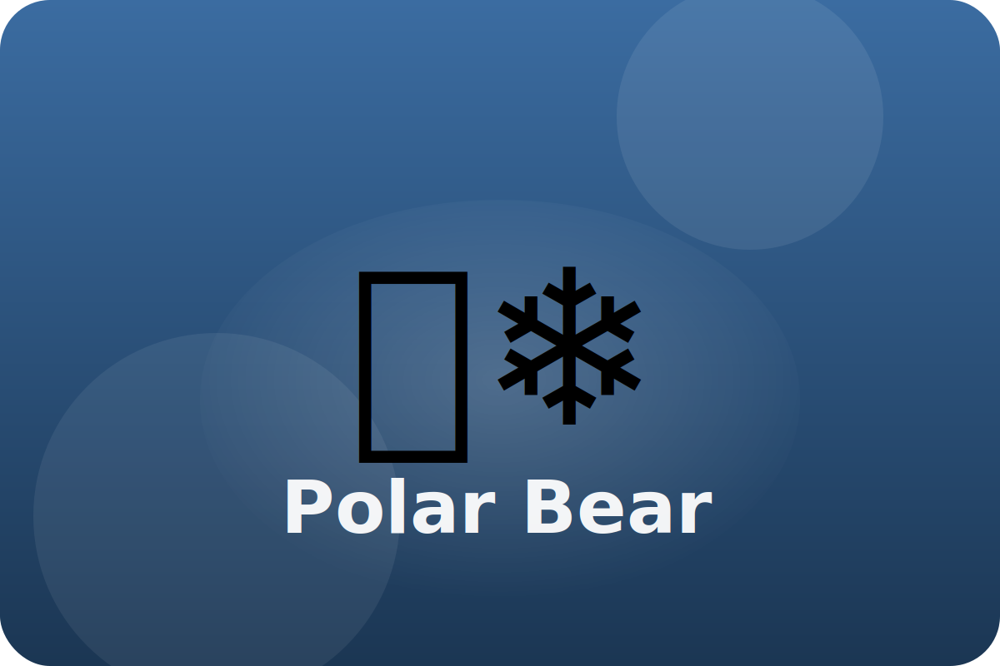

Tundra
Life on sea ice
Polar bears roam frozen seas hunting seals. They are excellent swimmers and strong walkers on ice.
Layered Warmth
Thick fur and a blanket of fat keep the bear warm in freezing air and icy water.
Wide Paws
Big paws spread their weight so the bear does not fall through thin ice.
Super Sniffer
Polar bears can smell seals hiding under snow from more than a mile away.
Keep exploring the Polar Bear
Watch the Polar Bear in action
All About Polar Bears for Kids (FreeSchool)